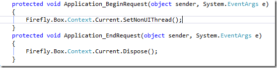

Configuring The Global.asax file
In the global.asax file, we’ll add a call to the Init method, so that it’ll be called when the application starts:

And we’ll add two more calls that will happen before and after the start of each request: 
The first one makes sure that if any UIController is called during the execution of the request, it’ll close immediately.
The second makes sure that all resources are freed once a request is completed, making the connection available for other threads that might want to use it.
Here is the global.asax file after the change:
using System;
using System.Collections.Generic;
using System.Linq;
using System.Web;
using System.Web.Mvc;
using System.Web.Routing;
namespace NorthwindWeb
{
public class MvcApplication : System.Web.HttpApplication
{
protected void Application_Start()
{
AreaRegistration.RegisterAllAreas();
RouteConfig.RegisterRoutes(RouteTable.Routes);
App_Start.NorthwindConfig.Init();
}
protected void Application_BeginRequest(object sender, System.EventArgs e)
{
Firefly.Box.Context.Current.SetNonUIThread();
}
protected void Application_EndRequest(object sender, System.EventArgs e)
{
Firefly.Box.Context.Current.Dispose();
}
}
} Now you are ready to use MVC. I recommend that you’ll read the “My First MVC Page” article next.
Help us improve, Edit this page on GitHub
or email us at info@fireflymigration.com